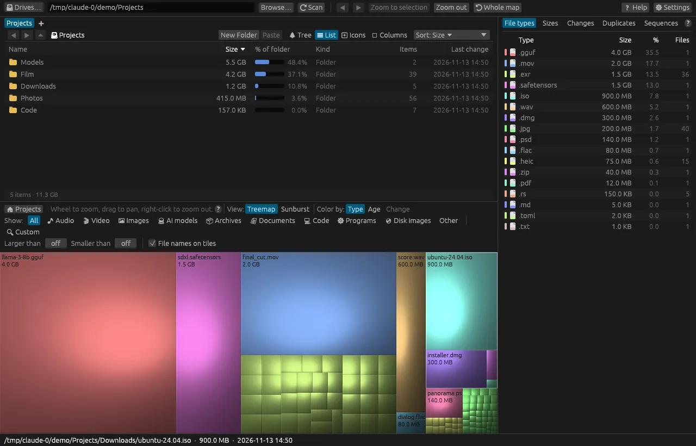
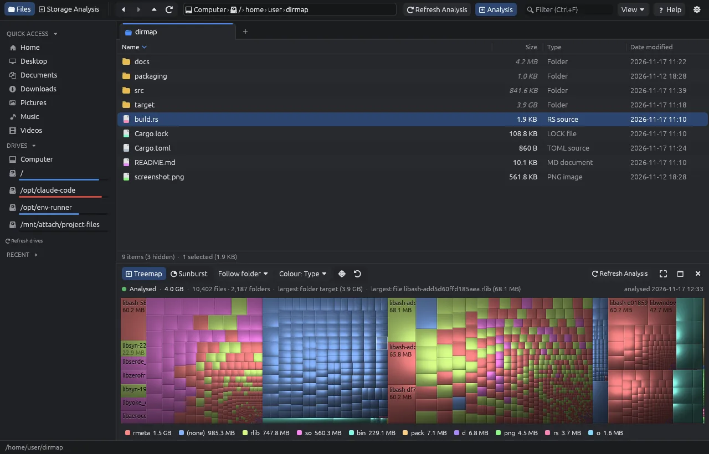
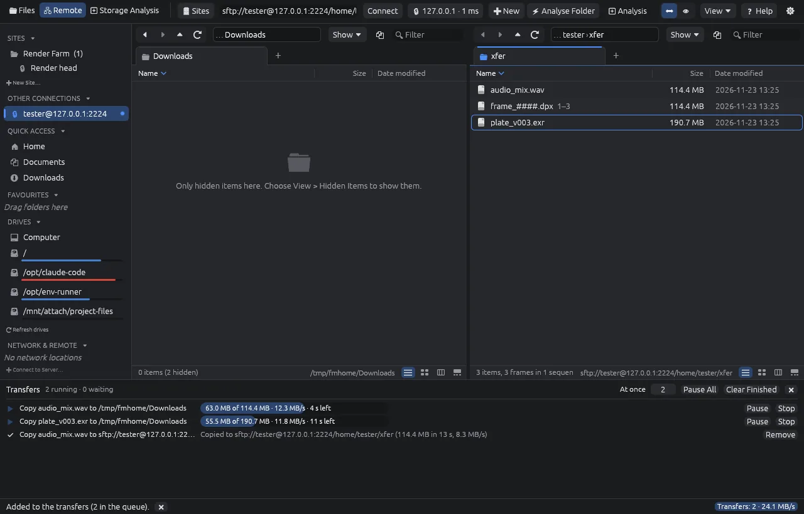
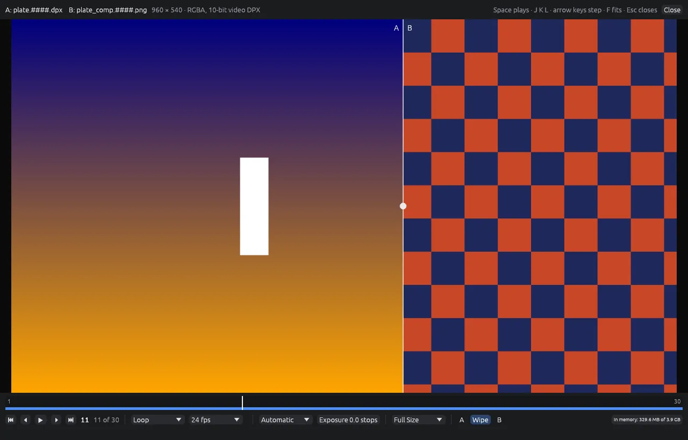

See where your disk went.
Filescape scans a drive in seconds and draws every file as a tile you can zoom through. When you find what's eating the space, deal with it right there in a full file manager.
A live demo with made-up sample data, so you can try the map before you download. The full app scans your own drives and adds a file manager, filters, duplicates, snapshots and remote servers. See what's in it
The map shows you the problem. The file manager under it fixes it.
A treemap you can fly through
Every file is a tile sized by how much space it takes, in soft colours by type (or the classic cushion shading, if you prefer). The map is drawn on your graphics card, so zooming and panning stay smooth even with millions of files.
- Zoom toward the pointer, pan with inertia, step Back and Forward
- Colour by file type, by age, or by what changed since a snapshot
- Switch to a sunburst when you want to see the folder tree as rings

A real file manager, with the map docked underneath
Browse without scanning first. Two panes, tabs, previews and the usual copy, move and rename. The map follows the folder you're in, and selecting a file highlights its tile.
- Details, Icons, Columns and Gallery views, with EXR and HDR thumbnails
- Batch rename with a preview, Compare Folders and sync, tags and notes
- Zip, 7z and tar archives open like folders

Servers open like drives
Connect to SFTP, FTP(S) and WebDAV, then browse, copy and analyse them like a local folder. Big copies go into a queue you can pause, stop and reorder.
- Saved sites in the sidebar, SSH agent or key files
- Passwords kept in your system keychain, never in a settings file
- Choose how many transfers run at once

Find the copies
Matched by size, then the first 64 KB, then a hash of the whole file.
See what grew
Save a snapshot, scan again next week, and colour the map by what changed.
Show only what matters
Filter by category, size or name pattern. Highlight matches or hide everything else.
Search subfolders
Search a whole tree from the filter box and save searches you run often.
Help built in
A searchable Help Centre and context help for every panel, offline.
Reports from a terminal
Print the largest folders or compare snapshots from the command line.
Frame sequences are one row, not 240.
Filescape folds numbered frames into a single sequence with its range, size and any missing frames. Copy or move the whole shot at once, and play it straight from the list.
- Player for EXR, DPX (8 to 16 bit), PNG and TIFF, played from memory
- sRGB, Rec.709 and Cineon log display, exposure, and .cube LUTs
- A/B wipe to compare a plate against the comp

| Name | Frames | Count | Size | Notes |
|---|---|---|---|---|
| sh010_plate.####.exr | 1001–1240 | 240 | 7.2 GB | Complete |
| sh010_comp_v012.####.exr | 1001–1240 | 238 | 2.8 GB | Missing 1137, 1138 |
| sh020_scan.####.dpx | 1001–1180 | 180 | 2.2 GB | 10-bit log |
| sh020_roto.####.png | 1001–1180 x2 | 90 | 412 MB | Every other frame |
Example shot folder. Padding, steps and gaps are detected the same way in the map's name filter, so sh0*_plate.####.exr finds every plate at once.
Free to look. $4.99 to do everything.
No subscription. Buy Pro once and use it on up to 3 of your computers at once.
Free
Forever, no sign-up
- The disk map: treemap and sunburst
- The file browser
- Zoom, browse and preview by hand
- Scan exclusions
Filescape Pro
One payment, yours to keep
- Everything in Free
- Two-pane file management, batch rename, Compare Folders
- SFTP, FTP(S) and WebDAV with the transfer queue
- Filter by type, by size or with your own pattern
- Sequence player, duplicates and snapshots
- Active on 3 of your computers at once
- Every update for a year, then keep the version you have
The checkout couldn't open. Please try again, or contact us.
Checkout and tax are handled by Paddle, our reseller. Your licence key arrives by email.
One app for all three systems.
macOS
macOS 11 Big Sur or later, on Apple silicon or Intel.
macOS universalNot notarised by Apple yet, so the first launch needs one extra step. How to open it on a Mac.
Linux
64-bit x86 with X11 or Wayland, on Ubuntu 22.04, Fedora 36, Debian 12 or anything newer. Desktop installs already have what it needs.
AppImage x86_64Or install it like other apps: .deb for Ubuntu, Debian and Mint, .rpm for Fedora and openSUSE, or the plain .tar.gz.
Memory: allow about 150 MB per million files scanned. Graphics: any GPU with Vulkan, Direct3D 12, Metal or OpenGL 3.3.
Do my files leave my computer?
No. Scanning, the map and previews all run locally. Filescape only goes online to activate a Pro licence, or when you connect to a server yourself.
My Mac says Filescape can't be opened. Is it safe?
Yes. Filescape isn't notarised by Apple yet, so macOS asks you to allow it once. Try to open it, click Done, then go to System Settings > Privacy & Security and click Open Anyway. Step-by-step instructions.
Is this a subscription?
No. Pro is a single $4.99 payment. There's nothing to renew.
I replaced my computer. Can I move my licence?
Yes. Deactivate Filescape on the old computer, or release it from your account at account.filescape.app, and activate on the new one. A licence can be active on 3 computers at once.
How is size calculated?
Filescape adds up file sizes. Hard links count once per name, and compressed, sparse or cloud-only files show their full size, so totals can differ from what your system reports as used.